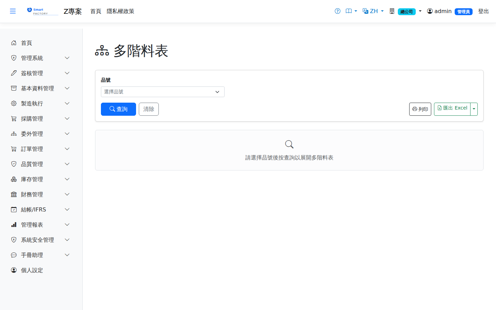

多階料表Multi-Level BOM
選擇一個品號，沿「品號 → 有效途程 → 工序用料」逐階展開多階料表：顯示每一階用料的單位用量、 損耗率與「累計需求量」（以最上階成品 1 單位為基準、含各階損耗率連乘），並標示來源（自製／採購） 與發料方式。自製件（有有效途程者）會繼續往下一階展開，採購件為葉節點。Choose an item and explode the multi-level BOM level by level along item → valid routing → operation material: it shows the usage per unit at each level, the scrap rate and the cumulative demand (for one unit of the top-level finished item, compounding the scrap rate of every level), and marks the source (make or buy) and the issue method. Made items (those with a valid routing) keep exploding to the next level; purchased items are leaf nodes.

查詢Search
列印與匯出Printing and export
說明Guide
途程的有效性依「啟用」旗標與生效起迄日（以查詢當日判斷）；品號未掛途程、途程停用或不在生效區間， 一律視為採購件不往下展開。累計需求量僅含 BOM 損耗率（ScrapRate），不含工序良率——投產量的良率回推屬 MRP 展開範疇。A routing is valid according to its active flag and its effective dates (judged on the query date); an item with no routing, or whose routing is inactive or outside its effective period, is treated as a purchased part and not exploded further. The cumulative demand includes only the BOM scrap rate, not the operation yield — working the release quantity back from yield belongs to the MRP run.
欄位說明Field reference
查詢條件Query criteria
| 條件Condition | 說明Guide |
|---|---|
| 品號Item | 必填Required 要展開的成品；一次展開一個品號Finished item to explode; one item at a time |
清單欄位List columns
| 欄位Field | 說明Guide |
|---|---|
| 階層Level | 該用料在多階結構中的層級；品號欄以縮排呈現層次Level of the material in the multi-level structure; the item column is indented to show it |
| 品號 / 品名Product | 該階的用料料件Material item at this level |
| 單位UOM | 用料的計量單位Unit of measure of the material |
| 單位用量Qty Per | 生產上一階一個單位所需的本階用量Usage at this level needed for one unit of the level above |
| 損耗率%Scrap % | 製程損耗的加成比例Uplift for process loss |
| 下角率%Offcut % | 裁切剩餘無法再利用的加成比例；與損耗率同為外加法Uplift for offcuts that cannot be reused; like the scrap rate it is added on top |
| 累計需求量Required Qty | 以最上階成品 1 單位為基準、含各階損耗率／下角率連乘後的總需求量Total requirement for one unit of the top-level finished item, compounding the scrap rate and offcut rate of every level |
| 來源Source | 自製（有有效途程，會繼續往下展開）或採購（葉節點，不再展開）Make (has a valid routing and keeps exploding downwards) or buy (a leaf node, not exploded further) |
| 發料方式Issue Method | 領料或倒扣（Backflush）Issued or backflushed |